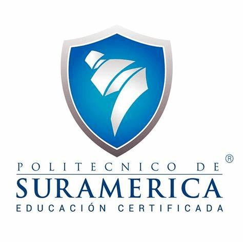

Educación
Servicio Nacional de Aprendizaje (SENA)
Técnico en Monitoreo Ambiental (2024-2025)

Politécnico de Suramérica
Técnico Laboral en Software (2024-2025)
Estudiante de grado 11° y personero de la I.E. San Roberto Belarmino, con experiencia en proyectos productivos e innovación. Apasionado por la Ingeniería Biomédica, con conocimientos básicos en programación y un enfoque en emprendimientos accesibles. Comprometido con la sostenibilidad, la tecnología y la resolución de problemas mediante soluciones prácticas e innovadoras.
A continuacion, mis estudios, cursos y certificaciones:
Técnico en Monitoreo Ambiental (2024-2025)
Técnico Laboral en Software (2024-2025)
University of Glasgow (2025)
Yale University (2024)
University of California, Irvine (2024)
IBM (2024)
BLENDEX (2024)
Universidad Distrital Francisco José de Caldas (2024)
Servicio Nacional de Aprendizaje (SENA) (2024)
Servicio Nacional de Aprendizaje (SENA) (2024)
Servicio Nacional de Aprendizaje (SENA) (2024)
Servicio Nacional de Aprendizaje (SENA) (2024)
Servicio Nacional de Aprendizaje (SENA) (2024)
Servicio Nacional de Aprendizaje (SENA) (2024)